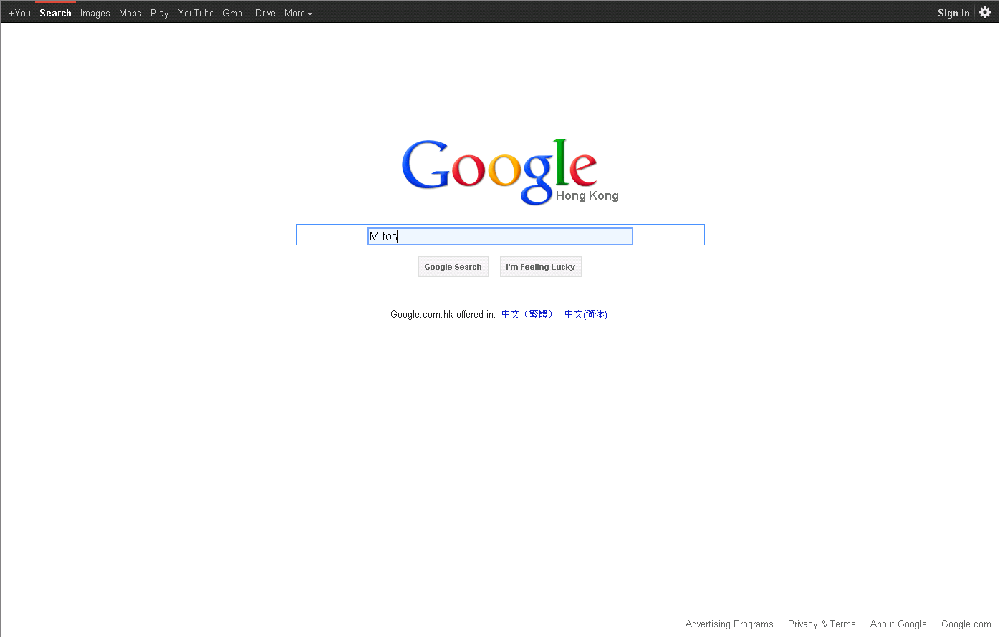

Action taken: Go to URL http://www.google.com
Action taken: Setting value 'Mifos' on 'Search', element with ID lst-ib^screen
STACKTRACE:java.lang.AssertionError: Expected Fails!
at org.junit.Assert.fail(Assert.java:88)
at webdriver.reporting.tests.SampleGoogleSearchReportTest.testGoogleSearch(SampleGoogleSearchReportTest.java:51)
at sun.reflect.NativeMethodAccessorImpl.invoke0(Native Method)
at sun.reflect.NativeMethodAccessorImpl.invoke(Unknown Source)
at sun.reflect.DelegatingMethodAccessorImpl.invoke(Unknown Source)
at java.lang.reflect.Method.invoke(Unknown Source)
at org.junit.runners.model.FrameworkMethod$1.runReflectiveCall(FrameworkMethod.java:47)
at org.junit.internal.runners.model.ReflectiveCallable.run(ReflectiveCallable.java:12)
at org.junit.runners.model.FrameworkMethod.invokeExplosively(FrameworkMethod.java:44)
at org.junit.internal.runners.statements.InvokeMethod.evaluate(InvokeMethod.java:17)
at org.junit.internal.runners.statements.RunBefores.evaluate(RunBefores.java:26)
at org.junit.internal.runners.statements.RunAfters.evaluate(RunAfters.java:27)
at org.junit.rules.TestWatcher$1.evaluate(TestWatcher.java:55)
at org.junit.rules.RunRules.evaluate(RunRules.java:20)
at org.junit.runners.ParentRunner.runLeaf(ParentRunner.java:271)
at org.junit.runners.BlockJUnit4ClassRunner.runChild(BlockJUnit4ClassRunner.java:70)
at org.junit.runners.BlockJUnit4ClassRunner.runChild(BlockJUnit4ClassRunner.java:50)
at org.junit.runners.ParentRunner$3.run(ParentRunner.java:238)
at org.junit.runners.ParentRunner$1.schedule(ParentRunner.java:63)
at org.junit.runners.ParentRunner.runChildren(ParentRunner.java:236)
at org.junit.runners.ParentRunner.access$000(ParentRunner.java:53)
at org.junit.runners.ParentRunner$2.evaluate(ParentRunner.java:229)
at org.junit.runners.ParentRunner.run(ParentRunner.java:309)
at org.eclipse.jdt.internal.junit4.runner.JUnit4TestReference.run(JUnit4TestReference.java:50)
at org.eclipse.jdt.internal.junit.runner.TestExecution.run(TestExecution.java:38)
at org.eclipse.jdt.internal.junit.runner.RemoteTestRunner.runTests(RemoteTestRunner.java:467)
at org.eclipse.jdt.internal.junit.runner.RemoteTestRunner.runTests(RemoteTestRunner.java:683)
at org.eclipse.jdt.internal.junit.runner.RemoteTestRunner.run(RemoteTestRunner.java:390)
at org.eclipse.jdt.internal.junit.runner.RemoteTestRunner.main(RemoteTestRunner.java:197)
Exception Message: 1.runReflectiveCall(FrameworkMethod.java:47)
at org.junit.internal.runners.model.ReflectiveCallable.run(ReflectiveCallable.java:12)
at org.junit.runners.model.FrameworkMethod.invokeExplosively(FrameworkMethod.java:44)
at org.junit.internal.runners.statements.InvokeMethod.evaluate(InvokeMethod.java:17)
at org.junit.internal.runners.statements.RunBefores.evaluate(RunBefores.java:26)
at org.junit.internal.runners.statements.RunAfters.evaluate(RunAfters.java:27)
at org.junit.rules.TestWatcher$1.evaluate(TestWatcher.java:55)
at org.junit.rules.RunRules.evaluate(RunRules.java:20)
at org.junit.runners.ParentRunner.runLeaf(ParentRunner.java:271)
at org.junit.runners.BlockJUnit4ClassRunner.runChild(BlockJUnit4ClassRunner.java:70)
at org.junit.runners.BlockJUnit4ClassRunner.runChild(BlockJUnit4ClassRunner.java:50)
at org.junit.runners.ParentRunner$3.run(ParentRunner.java:238)
at org.junit.runners.ParentRunner$1.schedule(ParentRunner.java:63)
at org.junit.runners.ParentRunner.runChildren(ParentRunner.java:236)
at org.junit.runners.ParentRunner.access$000(ParentRunner.java:53)
at org.junit.runners.ParentRunner$2.evaluate(ParentRunner.java:229)
at org.junit.runners.ParentRunner.run(ParentRunner.java:309)
at org.eclipse.jdt.internal.junit4.runner.JUnit4TestReference.run(JUnit4TestReference.java:50)
at org.eclipse.jdt.internal.junit.runner.TestExecution.run(TestExecution.java:38)
at org.eclipse.jdt.internal.junit.runner.RemoteTestRunner.runTests(RemoteTestRunner.java:467)
at org.eclipse.jdt.internal.junit.runner.RemoteTestRunner.runTests(RemoteTestRunner.java:683)
at org.eclipse.jdt.internal.junit.runner.RemoteTestRunner.run(RemoteTestRunner.java:390)
at org.eclipse.jdt.internal.junit.runner.RemoteTestRunner.main(RemoteTestRunner.java:197)
Class: Failed: webdriver.reporting.tests.SampleGoogleSearchReportTest.testGoogleSearchAction taken: Failed: webdriver.reporting.tests.SampleGoogleSearchReportTest.testGoogleSearch
Class: End Test: webdriver.reporting.tests.SampleGoogleSearchReportTest.testGoogleSearchAction taken: End Test: webdriver.reporting.tests.SampleGoogleSearchReportTest.testGoogleSearch